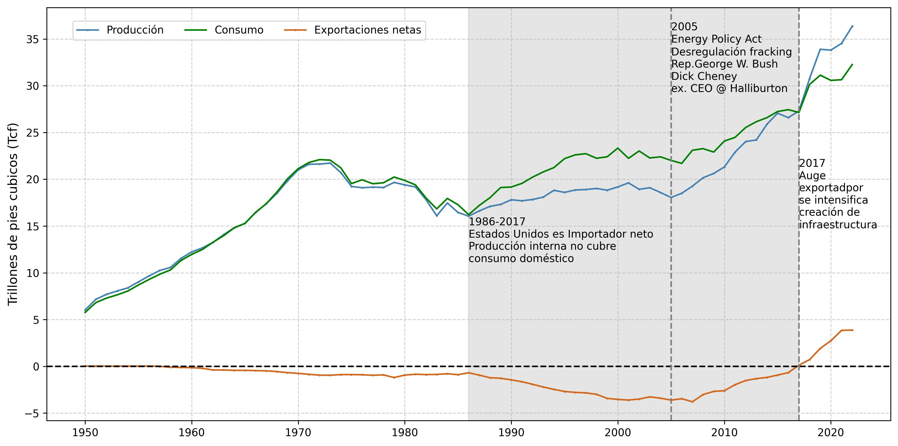
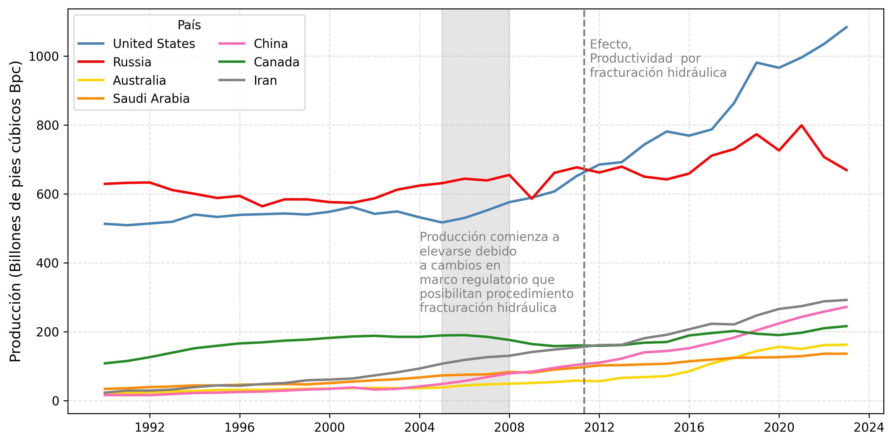
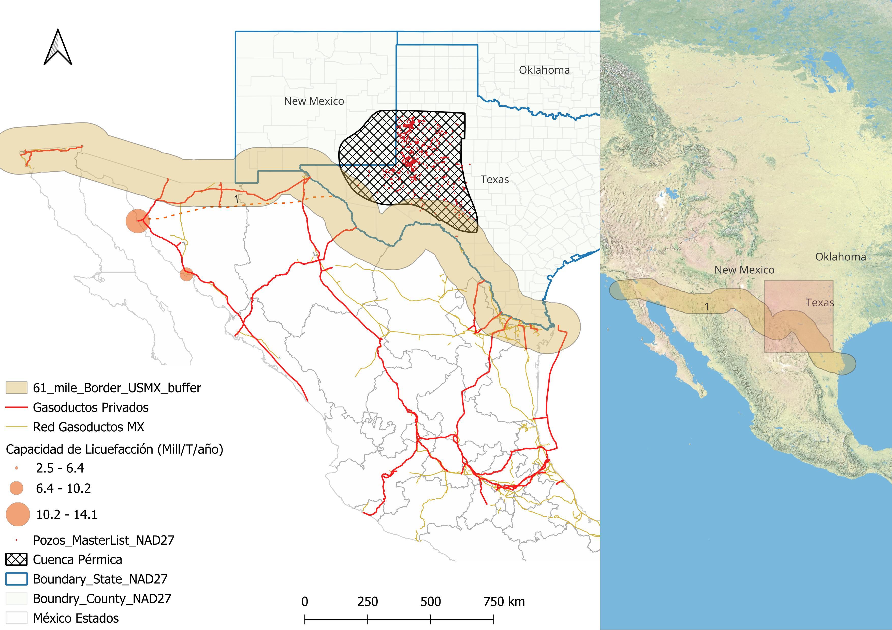
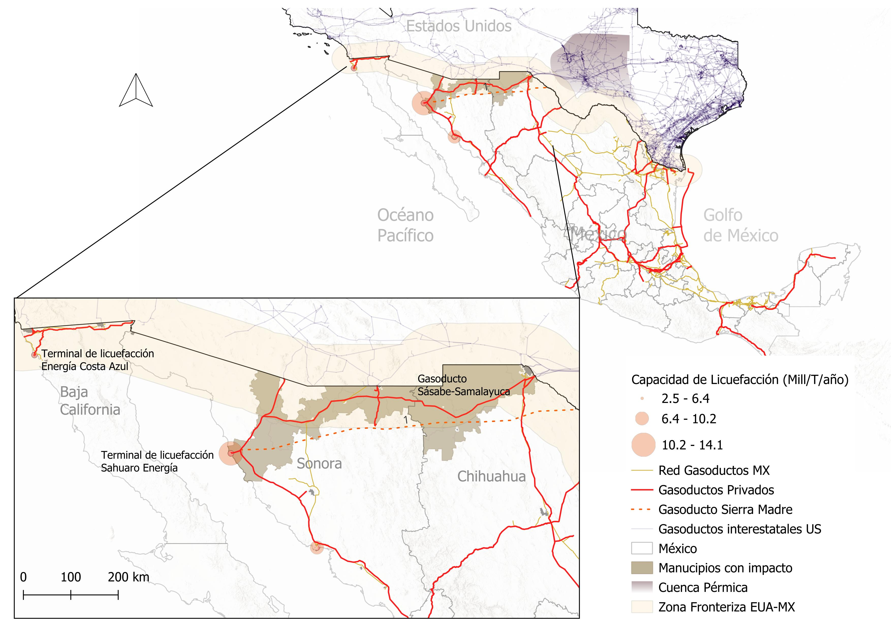
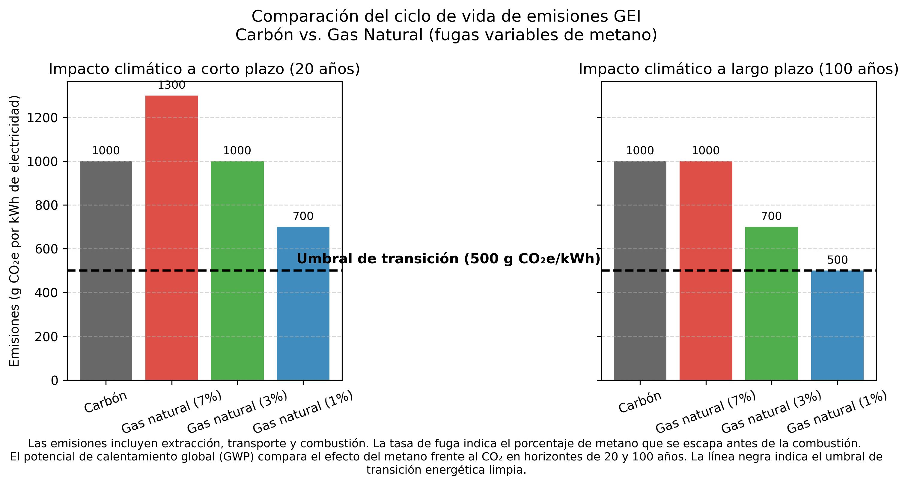
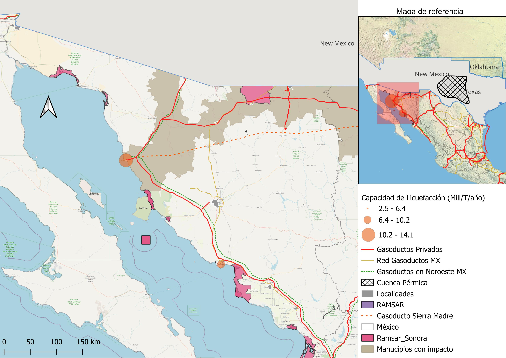

José Luis Manzanares Rivera
El Colegio de la Frontera Norte
jlmanzanares@colef.mx
2005 Energy Policy Act
Desregulación • Fracturación Hidráulica
George W. Bush (Rep.) and Dick Cheney Ex. CEO Halliburton
Figura 1. Gas natural en Estados Unidos. Balance entre producción, consumo interno y exportaciones 1950-2023
Figura 2. Producción gas natural. Principales países 1980-2024
Hoy principal productor mundial de Gas Natural
Transición Energética
Mapa 1: Cuenca Pérmica (Permian Basin)
Fuente: Elaboración propia con datos de Esri, U.S. Federal Datasets, Sempra, México Pacific, INEGI, LNG Alliance
Demanda mundial se incrementa. Especialmente en Asia.
Mapa 2: Tráfico de Buques Costa Este 2024

Congestión del Canal de Panamá
Rutas alternativas para el Pacífico
Fuente: Elaboración propia con datos de US Marine Cadastre
México: una ruta alternativa factible
Noroeste de México
Mapa 4: Gasoductos y plantas de licuefacción
Fuente: Elaboración propia con datos de Esri, U.S. Federal Datasets, Sempra, México Pacific, INEGI, LNG Alliance
¿Es realmente un energético de menor impacto para el proceso de cambio climático/calentamiento global?
Figura 3: Gas Natural en la generación de Eléctrica. Contraste emisiones vs. Carbón
Mapa 5: Terminal de licuefacción Puerto Libertad, Sonora
Modelo de ordenamiento Ecológico Marino del Golfo de California
Ubicación: Limita con el litoral del estado Sonora que va de Cabo Tepoca al norte de Isla Tiburón
Superficie total: 3,704 km²
Comunidades del pueblo indígena Comcaac-Seri en la franja costera de 91,000 ha
Sectores con aptitud predominante: Conservación
Fuente: Elaboración propia con datos de Esri, U.S. Federal Datasets, Sempra, México Pacific, INEGI, LNG Alliance
En 2005, la UNESCO inscribió a las Islas y Áreas Naturales Protegidas del Golfo de California como Patrimonio Mundial Natural de la Humanidad
Incluye nueve áreas naturales protegidas
Mil 126 kilómetros de largo y de 48 a 241 kilómetros de ancho
Posee un archipiélago de 922 islas de portentosa biodiversidad
"El acuario del Mundo" - Jacques Cousteau
Documentación visual complementaria sobre los proyectos de gas natural
Haga clic en cualquier imagen para verla en pantalla completa
XLV Congreso Nacional y XXX Internacional de Geografía
Villarrica, Región de La Araucanía
06 Noviembre 2025
Acceda a esta presentación en línea: